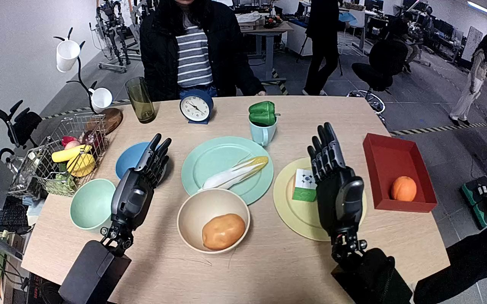

NVIDIA GR1 · 14
Video 14

Annotation
From the dedicated visual review of this video (humanoid_action_v1). Plain text · JSON
Observed outcome
Red apple released inside the tan bowl beside the pre-existing tan/orange oval object. The right hand is visibly open above it; the left hand remains open and separate.
Hand roles
- Right
Active manipulator: approaches, closes fingers around the red apple, lifts from yellow plate, transports over the table, lowers to the tan bowl, and opens to release.
- Left
Open hand held over the robot-left portion of the table; small posture changes but no object contact, support, transfer, or coordinated grasp.
Coordination
Single-hand manipulation throughout. The left hand supplies no visible support and there is no hand-to-hand or human transfer.
Robot-side evidence
- Basis
The forward/downward robot-side camera looks along the paired forearms from their near-body origins at the lower edges toward the table and person opposite. The active arm is continuously attached to the robot-right near-camera side and crosses toward the central bowl; the opposite forearm remains on the robot-left side. This egocentric body alignment grounds the right-hand label and agrees with the source annotation, rather than mapping a facing robot image side to anatomy.
- Confidence
medium-high
- Limitation
Shoulders and full torso are outside the camera view; anatomical assignment uses the robot-mounted viewpoint and forearm continuity.
Chronology
- Source frame interval
- 0
- 16
- Action
Both hands are open above the table. The right wrist rotates and arm moves outward, revealing the red apple on the yellow plate; left hand stays open and clear of objects.
- Confidence
high
- Source frame interval
- 17
- 42
- Action
The right hand moves over the red apple and turns palm downward, positioning fingers and thumb around its sides while the apple remains on the yellow plate.
- Confidence
high
- Source frame interval
- 43
- 62
- Action
Right fingers close around the apple. The hand establishes its grasp and begins lifting; the left hand remains open and does not stabilize the plate or apple.
- Confidence
high
- Source frame interval
- 63
- 86
- Action
The right hand lifts the apple visibly clear of the yellow plate and carries it inward and across above the large mint plate toward the tan bowl, maintaining its grasp.
- Confidence
high
- Source frame interval
- 87
- 110
- Action
The right hand lowers the held apple into the tan bowl beside the existing tan/orange oval object. The left hand remains out of the manipulation.
- Confidence
high
- Source frame interval
- 111
- 119
- Action
Right fingers spread and the apple separates from the hand, settling inside the tan bowl beside the existing object. The open right hand remains just above the bowl; no full arm withdrawal occurs.
- Confidence
high
Uncertainties
- The apple is hidden behind the right hand in the source initial PNG; its yellow-plate origin is revealed by the hand movement before grasping.
- The exact identity of the pre-existing tan/orange oval object in the destination bowl is unclear and is described by appearance.
- Shoulder attachments are outside view; anatomical side is grounded in the egocentric arm layout and continuous forearm motion.
Complete review record action_review.json
{
"prompt_protocol": "humanoid_action_v1",
"prompt_provenance": "visually_authored_from_video_and_initial_frame",
"reviewed_contact_sheets": [
"sheet_001.jpg"
],
"inspected_frame_stride": 2,
"inspected_sampled_frame_count": 60,
"initial_scene": "Robot-mounted forward/downward view over two extended forearms toward a tabletop. A yellow plate lies on the robot right with a green marked block; the red target apple is initially hidden by the upright right hand and becomes visible as that hand moves. The tan bowl nearer the robot already contains one tan/orange oval object. Both hands begin open.",
"observed_sequence": [
{
"source_frame_interval": [
0,
16
],
"action": "Both hands are open above the table. The right wrist rotates and arm moves outward, revealing the red apple on the yellow plate; left hand stays open and clear of objects.",
"confidence": "high"
},
{
"source_frame_interval": [
17,
42
],
"action": "The right hand moves over the red apple and turns palm downward, positioning fingers and thumb around its sides while the apple remains on the yellow plate.",
"confidence": "high"
},
{
"source_frame_interval": [
43,
62
],
"action": "Right fingers close around the apple. The hand establishes its grasp and begins lifting; the left hand remains open and does not stabilize the plate or apple.",
"confidence": "high"
},
{
"source_frame_interval": [
63,
86
],
"action": "The right hand lifts the apple visibly clear of the yellow plate and carries it inward and across above the large mint plate toward the tan bowl, maintaining its grasp.",
"confidence": "high"
},
{
"source_frame_interval": [
87,
110
],
"action": "The right hand lowers the held apple into the tan bowl beside the existing tan/orange oval object. The left hand remains out of the manipulation.",
"confidence": "high"
},
{
"source_frame_interval": [
111,
119
],
"action": "Right fingers spread and the apple separates from the hand, settling inside the tan bowl beside the existing object. The open right hand remains just above the bowl; no full arm withdrawal occurs.",
"confidence": "high"
}
],
"arm_hand_roles": {
"right": "Active manipulator: approaches, closes fingers around the red apple, lifts from yellow plate, transports over the table, lowers to the tan bowl, and opens to release.",
"left": "Open hand held over the robot-left portion of the table; small posture changes but no object contact, support, transfer, or coordinated grasp."
},
"anatomical_side_evidence": {
"basis": "The forward/downward robot-side camera looks along the paired forearms from their near-body origins at the lower edges toward the table and person opposite. The active arm is continuously attached to the robot-right near-camera side and crosses toward the central bowl; the opposite forearm remains on the robot-left side. This egocentric body alignment grounds the right-hand label and agrees with the source annotation, rather than mapping a facing robot image side to anatomy.",
"confidence": "medium-high",
"limitation": "Shoulders and full torso are outside the camera view; anatomical assignment uses the robot-mounted viewpoint and forearm continuity."
},
"coordination": "Single-hand manipulation throughout. The left hand supplies no visible support and there is no hand-to-hand or human transfer.",
"terminal_state": "Red apple released inside the tan bowl beside the pre-existing tan/orange oval object. The right hand is visibly open above it; the left hand remains open and separate.",
"uncertainties": [
"The apple is hidden behind the right hand in the source initial PNG; its yellow-plate origin is revealed by the hand movement before grasping.",
"The exact identity of the pre-existing tan/orange oval object in the destination bowl is unclear and is described by appearance.",
"Shoulder attachments are outside view; anatomical side is grounded in the egocentric arm layout and continuous forearm motion."
],
"annotation_discrepancies": [],
"evidence_frame_indices": [
0,
22,
48,
64,
82,
106,
112,
116,
119
],
"selected_execution_status": "success",
"inspection_coverage": "Visually inspected the complete every-second-frame contact sheet (frames 0 through 118, 60 samples), nine native frames including grasp/lift/transport/release and final frame 119, and the native source first-frame PNG.",
"video_id": "14",
"dataset": "NVIDIA_GR1_100",
"dedicated_review_agent": "review_gr1_14",
"review_source_video": "NVIDIA_GR1_100/14/original/original.mp4",
"source_frame_count": 120,
"source_fps": 20.0,
"native_detail_frames": [
0,
22,
48,
64,
82,
106,
112,
116,
119
],
"world_model_prompt": "The robot uses its right hand to grasp the red apple on the yellow plate and lift it clear, closing its fingers around the fruit. It carries the apple to the tan bowl and lowers it beside the oval object already inside. The right hand opens to release the apple into the bowl, leaving it there. Keep the camera fixed; preserve robot geometry, physically valid joint motion, and normal gripper opening and closing.",
"original_task_instruction": "Use the right hand to pick up red apple from yellow plate to tan bowl.",
"selected_segment": {
"start_frame": 0,
"end_frame_exclusive": 120,
"reason": "Complete original single-task reference; no cropping or trimming requested."
},
"source_video_sha256": "bf64693a7cd74811c81b11c6e3d6c1ae9ee5d8addf362e3d8dede705a51def77",
"review_completed_at": "2026-10-13T17:45:01.477276+00:00"
}